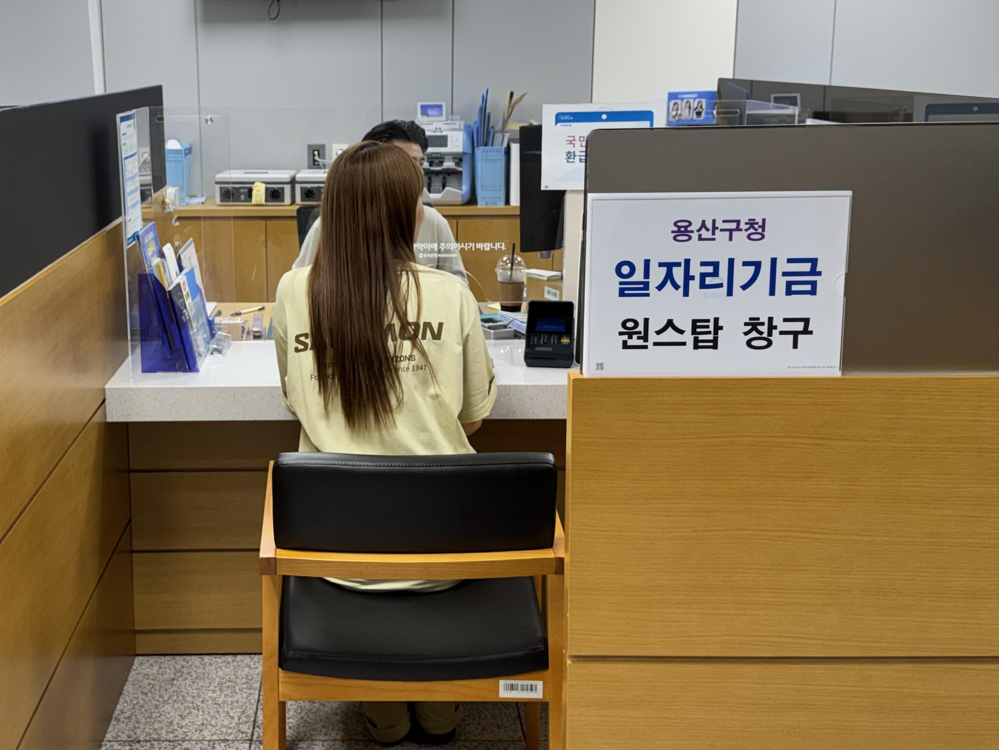

용산구, 청년기업 저금리 융자 24억 확대…연 1% 초저금리 11월까지
신청 46% 급증에 확대 결정, 소상공인 5천만·중기 1억 한도

[시사포커스 / 김재록 기자] 서울 용산구(구청장 김경대)가 청년기업인을 대상으로 한 저금리 융자지원 규모를 기존 20억 원에서 24억 원으로 20% 확대한다고 5일 밝혔다. 올해 연 1% 초저금리 융자 시행 이후 6월 기준 신청 건수가 지난해 같은 기간보다 46% 급증하면서, 구는 늘어난 수요에 대응하고 지역 내 청년기업의 안정적인 성장을 지원하기 위해 확대를 결정했다. 이번 사업은 일자리기금을 재원으로 하며, 융자지원을 마중물 삼아 지역경제 활성화와 지속 가능한 일자리 창출로 이어가겠다는 구의 의지를 담고 있다.
융자지원 대상은 용산구에 6개월 이상 거주하면서 지역 내 사업장을 둔 39세 이하 청년 소상공인과 중소기업이다. 융자 한도는 소상공인 최대 5천만 원, 중소기업 최대 1억 원이며, 조건은 연 금리 1%, 1년 거치 후 4년 균등분할상환이다. 담보 여건이 어렵거나 신용이 다소 낮은 청년도 서울신용보증재단 보증을 통해 신청할 수 있도록 문턱을 낮춘 점도 주목된다. 김경대 용산구청장은 "지역 내 기업이 튼튼하게 자리를 잡아야 지역경제에 활력이 돌고 일자리도 만들어질 수 있다"라며 "용산 청년들이 지역에서 걱정 없이 창업하고 성장할 수 있도록 일자리기금을 마중물 삼아 적극 지원하겠다"라고 밝혔다.
신청은 11월까지 상시 접수하며, 자금 소진 시 조기 마감될 수 있다. 신청은 우리은행 용산구청지점(녹사평대로 150, 1층) 일자리기금 원스톱 서비스 창구를 방문해 접수하면 된다. 2019년부터 2025년까지 총 294개 청년기업이 이 사업을 통해 지원을 받았으며, 지난해 수혜기업 38개 대상 만족도 조사에서도 경영 안정에 유의미한 도움이 됐다는 결과가 나온 바 있다. 용산구는 이번 규모 확대를 계기로 청년 창업 생태계 지원을 한층 강화해 나갈 방침이다.